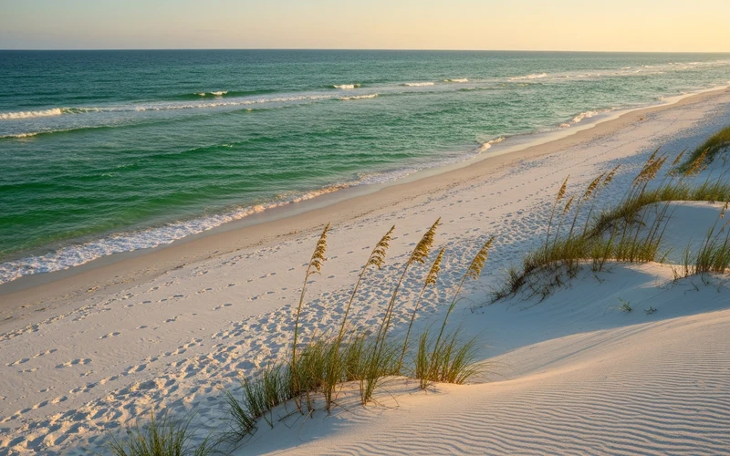
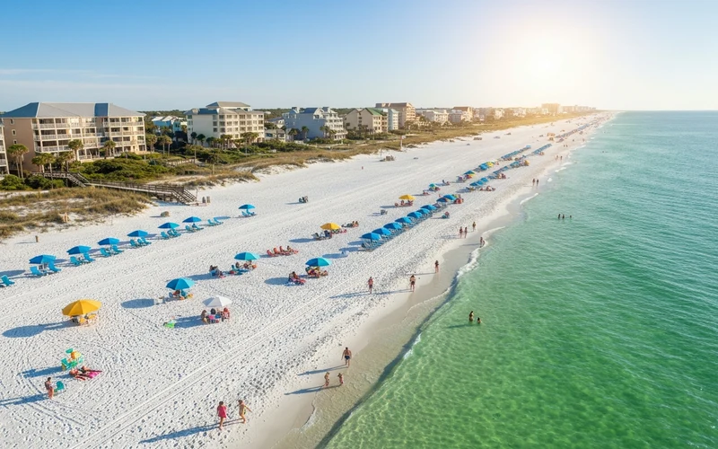
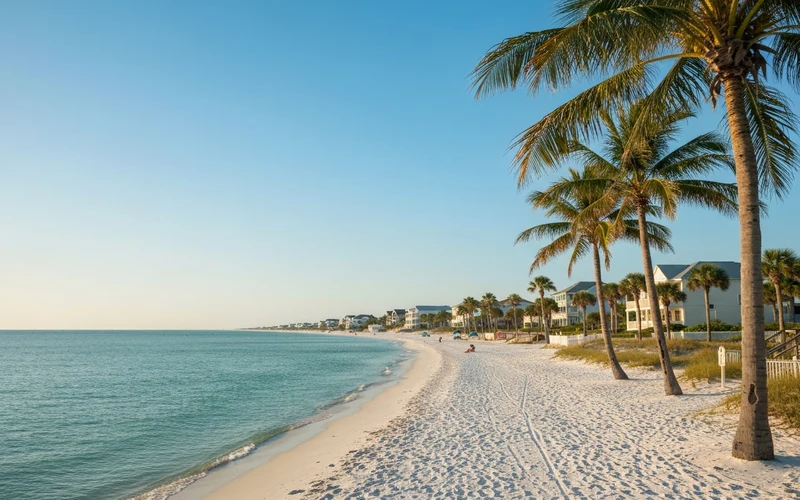

Destin, Florida está a menos de 10 horas en carro desde Texas — sin pasaporte, sin visa internacional, sin ningún trámite. Y hay un secreto que los texanos que han ido repiten siempre: el agua de Destin no parece el Golfo de México. Es esmeralda, cristalina y translúcida, como el Caribe. La arena es blanca y fría al tacto, hecha de cuarzo puro traído desde los Apalaches hace miles de años. No es exageración: tiene las playas con el agua más clara del sur de Estados Unidos.
¿Por qué el agua es esmeralda? La arena de Destin no es arena de roca triturada — es cuarzo puro, casi como polvo de vidrio fino. No absorbe el calor del sol (puedes caminar descalzo en pleno verano), no enturbia el agua y refleja la luz de manera que el Golfo aquí adquiere ese color verde-azul que normalmente asocias con el Caribe. Es único en todo el Golfo.
¿Por qué Destin es el destino de playa ideal desde Texas?
Para la comunidad venezolana y latina en Texas, Destin tiene una ventaja que pocas personas dimensionan bien: es la playa más espectacular del país accesible sin pasaporte, sin escala y, para quienes prefieren manejar, sin aeropuerto. Si tienes TPS, parole, residencia o ciudadanía, no hay ningún trámite de frontera, ninguna duda migratoria, ningún control aduanero. Subes al carro en Dallas o Houston y en menos de 10 horas estás en el agua.
Esto la convierte en el destino favorito de familias latinas de Houston y Dallas que quieren playa real — no la costa de Galveston o Corpus Christi, que tienen aguas café y condiciones muy distintas, sino playa caribeña doméstica. La comunidad venezolana del sur de Houston en particular ha hecho de Destin un destino de tradición familiar: en temporada alta encuentras grupos venezolanos, colombianos y hondureños por toda la playa.
A diferencia de Miami, Destin es una ciudad pequeña y relajada (unos 15,000 habitantes permanentes). No hay vida nocturna bulliciosa ni tráfico masivo. El ritmo es completamente de playa: despertarte con el sonido del mar, desayunar waffles en la terraza y pasar el día entre el agua y la arena. Para familias con niños, es prácticamente perfecta.
Cómo llegar desde Texas
Tienes dos opciones claras: manejar o volar. Ambas funcionan según tu situación.
En carro
- Dallas → Destin: ~560 millas, 9–10 horas por I-20 E + US-98
- Houston → Destin: ~500 millas, 7.5–8 horas por I-10 E
- Ideal para grupos o familias con mucho equipaje
- Sin costo de auto rentado en destino
- Opción: parada nocturna en Mobile, AL o Pensacola, FL
En avión
- DFW / DAL → VPS (Destin-FWB Airport): 1 escala típica, 3–4 horas total
- IAH / HOU → PNS (Pensacola): vuelos más frecuentes, 45 min a Destin en carro
- Precios: $150–350 RT por persona
- Necesitas auto rentado en destino ($40–70/día)
- También existe ECP (Panama City Beach), 1 hora al este
Ruta recomendada desde Dallas en carro: I-20 E hasta Meridian, MS → US-11 S hasta Hattiesburg → US-98 E directo a Destin. Más rápida y directa que ir hasta I-10. Tiempo real: 9 horas con parada de gasolina y comida.
Las playas de Destin
Destin y los alrededores tienen varias playas con características distintas. Aquí las principales:

PrístinaHenderson Beach State Park
30 acres de playa preservada. Menos gente, más prístina. Entrada $4/carro. La más hermosa de Destin para fotos y tranquilidad.

FamiliarMiramar Beach
El corazón de las casas y condos de alquiler. Familiar, amplia y con muchos servicios. La opción más popular para estadías largas.

LocalCrystal Beach
Zona residencial frente al mar, más tranquila. Acceso gratuito, menos turistas que Miramar. Preferida por locales y repetidores.
Crab Island: la experiencia obligatoria
Crab Island no es una isla en el sentido convencional — es un banco de arena en el canal intercoastal justo bajo el Destin Harbor Causeway Bridge. A partir de las 11am, decenas de botes, pontoons y jet skis se anclan ahí formando una fiesta flotante en el agua. La gente baja de los botes, se para en aguas de 1 metro, escucha música, come en balsas-restaurante flotantes y socializa. Es la experiencia más Destin que existe y no se consigue igual en ningún otro lugar del país.
Para llegar: la opción más económica es el water taxi desde HarborWalk Village ($10–15 por persona, ida y vuelta). Si van en grupo, alquilar una pontoon desde el Destin Harbor cuesta $300–450 la media jornada (4 horas) y lo divide entre todos — para una familia de 4-6 personas termina siendo muy accesible.
Qué hacer en Destin
- HarborWalk Village: El centro turístico del puerto. Restaurantes con vistas, tiendas de souvenirs, paseos en catamarán y salidas de pesca. El atardecer aquí es espectacular.
- Pesca deportiva: Destin se llama a sí misma “la ciudad más afortunada del mundo” por la abundancia de peces. Hay docenas de charters saliendo todos los días — desde $60/persona en pesca en el muelle hasta $150+ en alta mar. El mero, el pez espada y el mahi-mahi son los trofeos típicos.
- Scenic Highway 30A: A 20–30 minutos al este de Destin, la autopista 30A atraviesa una docena de pueblos de playa cuidadosamente planeados: Seaside (donde se filmó The Truman Show), Rosemary Beach, WaterColor y Alys Beach. Mercados locales, galerías de arte, cafés boutique y arquitectura que parece sacada de una revista. Un día completo de recorrido muy diferente al típico turismo de playa.
- Snorkel y kayak: La claridad del agua hace que el snorkel sea excelente cerca del shore. Varias empresas ofrecen tours en kayak transparente (clear kayak) donde puedes ver el fondo marino desde arriba.
- Parasailing y jet ski: Clásicos del verano. Parasailing desde $45/persona, jet ski desde $60/hora. Decenas de operadores en la playa y el harbor.
- Big Kahuna's Water & Adventure Park: Parque acuático en Destin — toboganes, lazy river, área infantil. Perfecto para los niños cuando se cansan de la playa natural (entrada ~$45 adultos, $35 niños menores de 1.2m).
- Destin Commons: Centro comercial al aire libre con decenas de restaurantes, cines y tiendas. Buen plan para las tardes o si llueve.
Dónde hospedarse
Destin tiene dos opciones muy marcadas: vacation rental (condo o casa en alquiler, muy popular con familias) u hotel resort (más servicios, menos espacio).
Vacation rentals (VRBO / Airbnb)
Son la opción preferida de las familias con niños. Un condo de 2 habitaciones con vista al mar puede tener cocina equipada, lavadora, terraza y acceso directo a la playa — lo que reduce significativamente el gasto en restaurantes. En temporada alta (julio-agosto) espera pagar $250–450/noche en beachfront; en temporada baja (septiembre-octubre) los mismos condos bajan a $130–220/noche. La zona de Miramar Beach concentra la mayor oferta de condos y casas de alquiler.
Hoteles y resorts
- The Henderson Beach Resort: El hotel más lujoso de Destin. Directo en Henderson State Park. Habitaciones desde $350/noche en temporada alta.
- Hilton Sandestin Beach Golf Resort & Spa: Resort completo con golf, spa, piscinas y acceso a la playa. Una ciudad dentro del hotel. Desde $280/noche.
- Holiday Inn Resort Destin: Opción familiar con piscinas y playa. Precio más accesible, desde $180/noche en verano.
- Opciones económicas: Hampton Inn, Comfort Suites y hoteles de cadena a 10–15 min de la playa desde $90–130/noche. Sin vistas al mar pero perfectos para quienes pasan el día fuera.
Presupuesto real 2026
Estimado para un viaje de 5 días (familia de 4 personas) desde Dallas o Houston:
| Gasto | En carro (desde Dallas) | En avión (DFW→VPS) |
|---|---|---|
| Transporte (ida y vuelta) | $160–200 gasolina | $600–1,400 (4 tiquetes + auto rentado) |
| Alojamiento (4 noches) | $500–800 condo temp. baja / $900–1,600 temp. alta | |
| Comida ($70–120/día × 5) | $350–600 | |
| Actividades (Crab Island, parasailing, etc.) | $200–500 | |
| Total estimado | $1,200–3,100 | $1,800–4,100 |
Precios en USD. Alojamiento basado en condo 2BR/2BA estándar. Temporada alta = junio-agosto. Temporada baja = septiembre-octubre. Los precios varían según disponibilidad y anticipación de la reserva.
¿Cuándo ir a Destin?
El secreto que pocos conocen: septiembre y octubre son los mejores meses. El agua todavía está a 26–28°C (perfecta para nadar), los condos beachfront cuestan la mitad que en julio, las playas están prácticamente vacías entre semana y el clima es glorioso — temperaturas de 26–30°C con cielos despejados. La única nota es la temporada de huracanes (junio-noviembre), pero el Panhandle de Florida históricamente recibe muchos menos impactos directos que el sur de Florida o la Costa del Golfo de Louisiana.
¿Tienes fechas en mente?
Te armo el paquete Destin completo — en carro o en avión — con opciones reales de alojamiento
Cotizar ahoraTips para tu viaje a Destin
- Reserva alojamiento con anticipación en verano: Los condos beachfront en julio y agosto se agotan con 2-3 meses de anticipación, especialmente los fines de semana. Si vas en temporada alta, reserva cuanto antes.
- Lleva sillas y sombrilla propia: Rentar sillas y sombrillas en la playa cuesta $30–50/día. Una set propia te dura el viaje entero. Si manejas, no hay excusa para no llevarlas.
- Protector solar obligatorio: La arena blanca refleja el sol además de recibirlo. La gente se quema mucho más rápido de lo que espera. SPF 50+, resistente al agua, y repón cada 2 horas.
- El tráfico de los domingos: La US-98 (la carretera principal de Destin) es caótica los domingos por la tarde — es cuando todos los turistas del fin de semana salen al mismo tiempo. Si puedes llegar el sábado y salir el lunes, te ahorras horas.
- Grocery shopping al llegar: Hay un Walmart, un Publix y varios mercados en Destin. Compra agua, snacks y frutas al llegar — comer en la playa desde tu condo sale mucho más económico que restaurantes todos los días.
- 30A es plan de tarde, no de playa: La carretera 30A y sus pueblitos son perfectos para las tardes cuando la playa quema más. Sal de la playa a las 3pm, date una ducha, y maneja 20 minutos hasta Seaside para explorar y cenar.
- Crab Island llega lleno temprano: Los mejores spots para anclar se llenan antes del mediodía. Si alquilas pontoon, sal del harbor antes de las 10:30am.
Preguntas frecuentes
¿Cuánto se tarda en manejar de Texas a Destin?
Desde Dallas son 9 a 10 horas de manejo directo (~560 millas por la I-20 Este y luego US-98). Desde Houston son unas 7.5 a 8 horas (~500 millas por I-10 Este). Muchas familias hacen el trayecto de noche para aprovechar el día siguiente en la playa, o parten el viaje con parada en Pensacola.
¿Necesito pasaporte para ir a Destin desde Texas?
No. Destin está en Florida, dentro de Estados Unidos. Si tienes visa vigente, TPS, parole, residencia o ciudadanía, no hay ningún control migratorio en el trayecto. Solo necesitas tu ID para el aeropuerto si vuelas, o nada especial si manejas.
¿Cuándo es la mejor temporada para visitar Destin?
Septiembre y octubre son los meses recomendados para quienes buscan la mejor relación calidad-precio: el agua todavía está perfecta (26–28°C), la playa tiene pocas personas y los precios de alojamiento caen 30–40% respecto al verano. Mayo es otra excelente opción antes de que empiece el verano escolar.
¿Hay aeropuerto en Destin?
Sí. El aeropuerto VPS (Destin-Fort Walton Beach Regional Airport) está a 15 minutos del centro de Destin. También puedes volar a PNS (Pensacola International Airport), a 45 minutos, que tiene más rutas directas y generalmente mejores tarifas.
¿Qué es Crab Island y cómo llego?
Crab Island es un banco de arena en el canal intercoastal de Destin donde cientos de botes se anclan para socializar en el agua. La forma más económica de llegar es el water taxi desde HarborWalk Village ($10–15 por persona). Si van en grupo, rentar una pontoon ($300–450 la media jornada) es más conveniente y sale similar dividido entre todos.
¿Es Destin buena opción para familias venezolanas y latinas?
Sí — es probablemente la mejor playa de Estados Unidos para familias latinas en Texas. No necesita pasaporte, está a distancia manejable, tiene agua de color Caribe y es un destino tranquilo y familiar. En temporada alta hay una presencia latinoamericana muy grande, especialmente de Houston. El agua es segura, poco profunda cerca del shore y perfecta para niños.